Spirit Slices
Alcohol as a Socially Accepted Addiction
We all need something to blame
Total respondents: 58,633
With alcohol data: 58,052
With mood data: 45,659
K6 valid pairs: 45,619
↺ Replay
DRINKING FREQUENCY DISTRIBUTION
click to explore data layers →
Threshold
35
Depth
220
Point Size
4
Opacity
65
Softness
5
Speed
160
Drag to rotate · Scroll to zoom · ↺ Replay scan
Loading Scan Data
0%